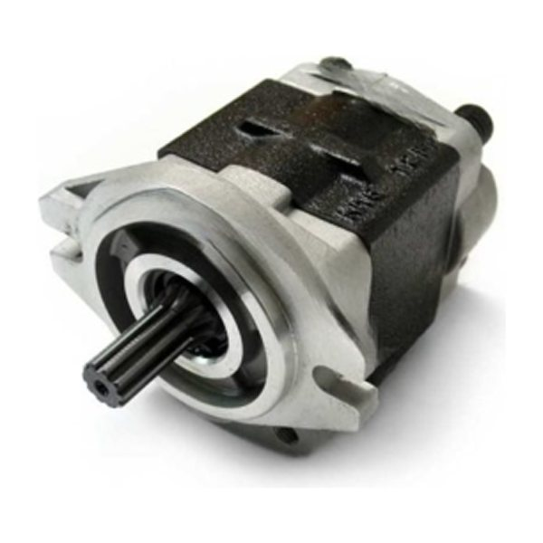

Parts › Hydraulics › 46009-402

Available
Email for a quote
Nissan 46009-402 Hydraulic Pump
| OEM part number | 46009-402 |
| Fits | Nissan |
| Models / notes | LO2 |
| Category | Hydraulics |
| Type | Aftermarket replacement |
Send us the quantity you need and we'll reply with pricing, usually within 24 hours. Not the exact part? We can source it. Send the part number or a photo.